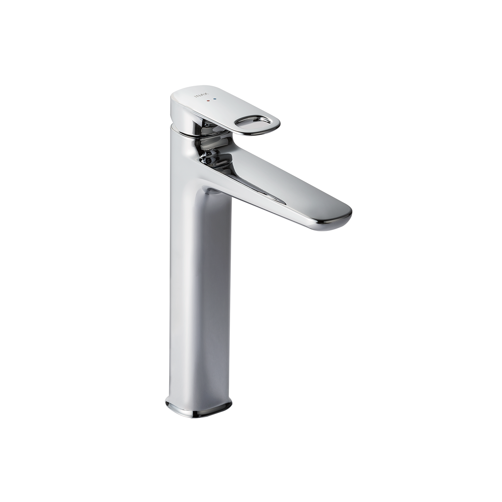
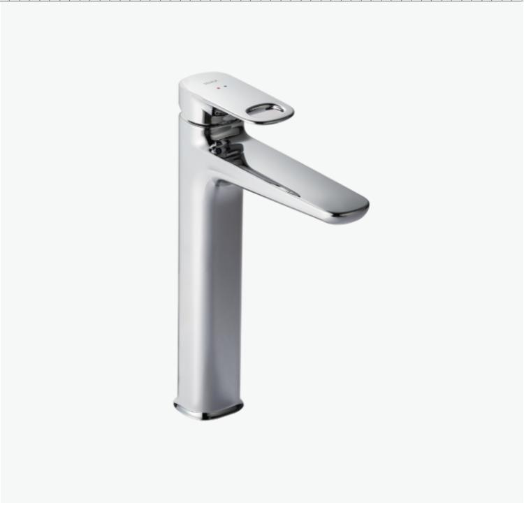
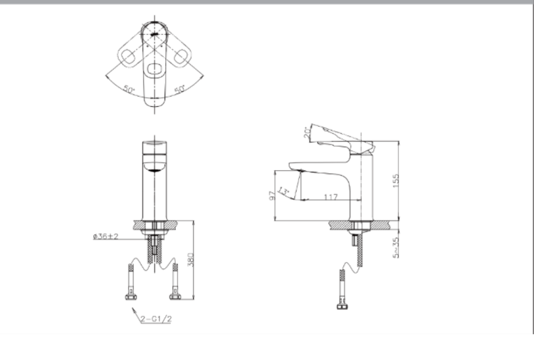

Bạn đang tìm kiếm vòi chậu đặt bàn không chỉ tăng tính thẩm mỹ cho không gian mà còn tối ưu về công năng và độ bền khi sử dụng? Vòi chậu đặt bàn LFV-652SH là sự lựa chọn hoàn hảo, mang đến vẻ đẹp hiện đại, tiện nghi vượt trội và khả năng tiết kiệm nước đáng kể cho không gian phòng tắm của bạn.Các điểm nổi bật của vòi chậu đặt bàn LFV-652SHThiết kế tinh tế, thao tác dễ dàngVòi chậu LFV-652SH sở hữu thiết kế trơn tru, hiện đại và thanh lịch. Với kích thước hài hòa 166 x 52 x 273 (mm) (Sâu x Rộng x Cao), vòi đặt nổi trên mặt bàn, tạo nên một điểm nhấn sang trọng và đẳng cấp.Cần gạt tiện lợi: Cần gạt được thiết kế với lỗ nhỏ, không chỉ tạo điểm nhấn thẩm mỹ mà còn giúp người dùng thao tác dễ dàng và chính xác hơn khi điều chỉnh dòng nước và nhiệt độ. Sự trơn tru trong thiết kế tổng thể giúp vòi dễ dàng vệ sinh, hạn chế bám bẩn.Chất liệu cao cấp: Sản phẩm được chế tạo từ chất liệu cao cấp với lớp mạ Crom - Niken dày. Lớp mạ này không chỉ tạo nên độ sáng bóng lâu bền mà còn bảo vệ vòi khỏi sự ăn mòn và oxy hóa, giữ được vẻ đẹp như mới theo thời gian.Công nghệ Eco Care và độ bền vượt trộiVòi chậu lavabo đặt bàn INAX LFV-652SH không chỉ đẹp mà còn chú trọng đến tính năng và hiệu quả sử dụng lâu dài, đặc biệt là khả năng bảo vệ môi trường và tiết kiệm tài nguyên.Eco Care: Sản phẩm được trang bị vòi sục khí thông minh, một tính năng Eco Care giúp hòa trộn không khí vào dòng nước. Điều này không chỉ tạo ra dòng nước êm ái, đầy đặn hơn khi sử dụng, mà còn giúp tiết kiệm nước một cách đáng kể mà không làm giảm đi trải nghiệm thoải mái.Van sứ chống rò rỉ: Độ bền của sản phẩm được đảm bảo nhờ van điều khiển bằng sứ chất lượng cao. Van sứ có khả năng chống mài mòn vượt trội, đảm bảo độ bền cao và chống rò rỉ nước hiệu quả ngay cả trong điều kiện áp lực nước thay đổi, mang lại sự an tâm tuyệt đối cho người dùng trong suốt quá trình sử dụng.Tính năng nóng - lạnh linh hoạt: Là vòi nước nóng lạnh, LFV-652SH cho phép bạn dễ dàng điều chỉnh nhiệt độ nước theo nhu cầu, mang lại sự tiện nghi tối đa, đặc biệt trong điều kiện thời tiết lạnh.Với sự kết hợp giữa thiết kế tinh tế, công nghệ tiết kiệm nước và các chi tiết cấu tạo bền bỉ, vòi chậu lavabo INAX LFV-652SH là lựa chọn hoàn hảo để nâng cấp tiện nghi và thẩm mỹ cho phòng tắm hiện đại của bạn.Video về trọn bộ thiết bị vệ sinh, nhà tắm S600Bản vẽ vòi chậu đặt bàn LFV-652SHFile hướng dẫn lắp đặt sản phẩmLFV-652S,LFV652SH (LFCS101S,LFCS101SH).pdfThông số kỹ thuậtTên sản phẩmVòi chậu đặt bàn nóng - lạnhChất liệuMạ Crom-NikenKích thước166 x 52 x 273 (mm) (Sâu x Rộng x Cao)Tính năng- Eco Care với vòi sục khí, tiết kiệm nước - Van điều khiển bằng sứ có độ bền cao, chống rò rỉ nướcThương hiệuINAXThiết kế- Trơn tru, dễ sử dụng - Cần gạt có lỗ giúp thao tác dễ dàngKhác- Hotline tư vấn và bảo hành: 18006633
Vòi chậu đặt bàn LFV-652SH
Vòi chậu thương hiệu INAX.
Đã cập nhật danh sách yêu thích.
DANH MỤC: Vòi chậu
MÃ SẢN PHẨM: LFV-652SH
DEPTH: 166mm
HEIGHT: 273mm
WIDTH: 52mm
Bạn đang tìm kiếm vòi chậu đặt bàn không chỉ tăng tính thẩm mỹ cho không gian mà còn tối ưu về công năng và độ bền khi sử dụng? Vòi chậu đặt bàn LFV-652SH là sự lựa chọn hoàn hảo, mang đến vẻ đẹp hiện đại, tiện nghi vượt trội và khả năng tiết kiệm nước đáng kể cho không gian phòng tắm của bạn.Các điểm nổi bật của vòi chậu đặt bàn LFV-652SHThiết kế tinh tế, thao tác dễ dàngVòi chậu LFV-652SH sở hữu thiết kế trơn tru, hiện đại và thanh lịch. Với kích thước hài hòa 166 x 52 x 273 (mm) (Sâu x Rộng x Cao), vòi đặt nổi trên mặt bàn, tạo nên một điểm nhấn sang trọng và đẳng cấp.Cần gạt tiện lợi: Cần gạt được thiết kế với lỗ nhỏ, không chỉ tạo điểm nhấn thẩm mỹ mà còn giúp người dùng thao tác dễ dàng và chính xác hơn khi điều chỉnh dòng nước và nhiệt độ. Sự trơn tru trong thiết kế tổng thể giúp vòi dễ dàng vệ sinh, hạn chế bám bẩn.Chất liệu cao cấp: Sản phẩm được chế tạo từ chất liệu cao cấp với lớp mạ Crom - Niken dày. Lớp mạ này không chỉ tạo nên độ sáng bóng lâu bền mà còn bảo vệ vòi khỏi sự ăn mòn và oxy hóa, giữ được vẻ đẹp như mới theo thời gian.Công nghệ Eco Care và độ bền vượt trộiVòi chậu lavabo đặt bàn INAX LFV-652SH không chỉ đẹp mà còn chú trọng đến tính năng và hiệu quả sử dụng lâu dài, đặc biệt là khả năng bảo vệ môi trường và tiết kiệm tài nguyên.Eco Care: Sản phẩm được trang bị vòi sục khí thông minh, một tính năng Eco Care giúp hòa trộn không khí vào dòng nước. Điều này không chỉ tạo ra dòng nước êm ái, đầy đặn hơn khi sử dụng, mà còn giúp tiết kiệm nước một cách đáng kể mà không làm giảm đi trải nghiệm thoải mái.Van sứ chống rò rỉ: Độ bền của sản phẩm được đảm bảo nhờ van điều khiển bằng sứ chất lượng cao. Van sứ có khả năng chống mài mòn vượt trội, đảm bảo độ bền cao và chống rò rỉ nước hiệu quả ngay cả trong điều kiện áp lực nước thay đổi, mang lại sự an tâm tuyệt đối cho người dùng trong suốt quá trình sử dụng.Tính năng nóng - lạnh linh hoạt: Là vòi nước nóng lạnh, LFV-652SH cho phép bạn dễ dàng điều chỉnh nhiệt độ nước theo nhu cầu, mang lại sự tiện nghi tối đa, đặc biệt trong điều kiện thời tiết lạnh.Với sự kết hợp giữa thiết kế tinh tế, công nghệ tiết kiệm nước và các chi tiết cấu tạo bền bỉ, vòi chậu lavabo INAX LFV-652SH là lựa chọn hoàn hảo để nâng cấp tiện nghi và thẩm mỹ cho phòng tắm hiện đại của bạn.Video về trọn bộ thiết bị vệ sinh, nhà tắm S600Bản vẽ vòi chậu đặt bàn LFV-652SHFile hướng dẫn lắp đặt sản phẩmLFV-652S,LFV652SH (LFCS101S,LFCS101SH).pdfThông số kỹ thuậtTên sản phẩmVòi chậu đặt bàn nóng - lạnhChất liệuMạ Crom-NikenKích thước166 x 52 x 273 (mm) (Sâu x Rộng x Cao)Tính năng- Eco Care với vòi sục khí, tiết kiệm nước - Van điều khiển bằng sứ có độ bền cao, chống rò rỉ nướcThương hiệuINAXThiết kế- Trơn tru, dễ sử dụng - Cần gạt có lỗ giúp thao tác dễ dàngKhác- Hotline tư vấn và bảo hành: 18006633
DANH MỤC: Vòi chậu
MÃ SẢN PHẨM: LFV-652SH
DEPTH: 166mm
HEIGHT: 273mm
WIDTH: 52mm